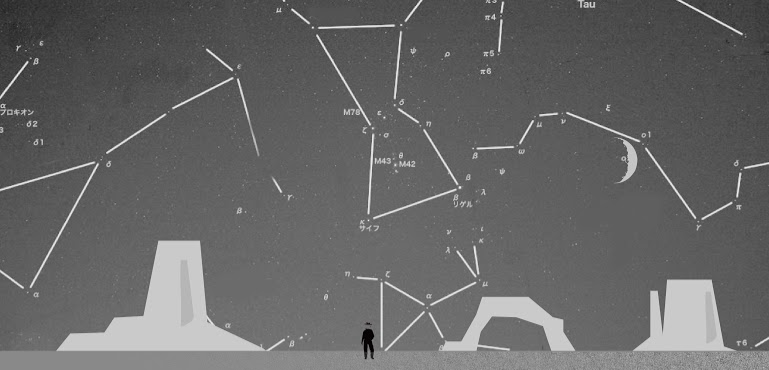

樂園設施 amusement park 
為增加校慶遊樂園活動之多元性，舉辦遊園馬車、泡泡足球、划船競賽、浪人體驗，為成大拓荒校慶增添更多可參與的形式，使每個參與成大校慶的人，在其中體會不同於以往的創新體驗，已達活動目的讓不畏創新嘗試存於每個人心中。
純粹地球展-地科系展

結合地科系展，地球科學系秉持教育大眾的理念，提供觀眾認識地球科學的機會並讓觀眾體會大學環境，期望能將學術知識帶往生活中發揮實質功用，使觀眾能更加思索我們周遭的環境，並加以愛惜與維護。
地球在哪裡?
國立成功大學 成功校區 地科系館
國立成功大學 成功校區 博物館
什麼時候地球開始轉?
11/8(六)、11/9(日) 9:00~17:00
地球理念
今年系展的主題是【純粹地球 Purity Earth】，在我們學習地科知識的過程中，會因為教的教材不一，或因考試的需求而有時候會變得過於複雜。這次的系展想給來訪的民眾一個最簡單最純粹的地球，以最簡單的概念、最直覺的實體道具，讓民眾很輕鬆的了解地科知識，另外，地科博物館首次對外開放常態展，搭配地科系專業導覽人員的解說可以讓大眾對我們的地球有更親近的認識。
地球連結
國立成功大學 地球科學系系展 NCKU Earth Scicnce Exhibition